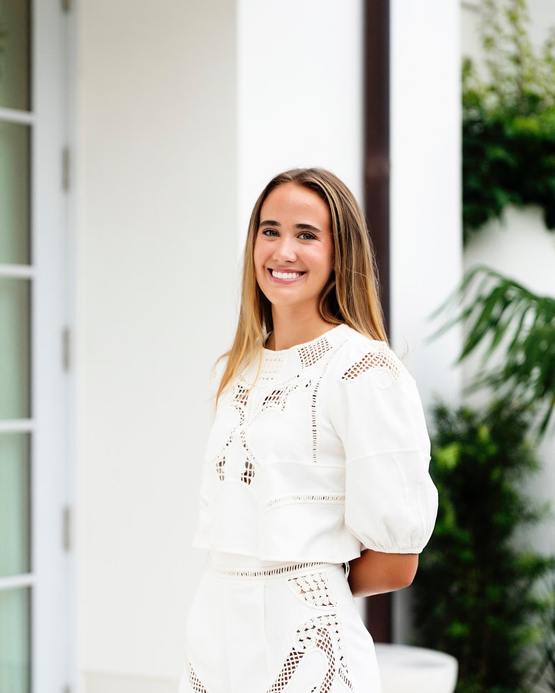

The Story Behind Woven

Hi! I'm Sadie Janes.
Sustainability became important to me at a young age. I became a vegetarian in fifth grade, and that early decision made me curious about how small personal choices can create larger environmental effects.
In ninth-grade biology, I researched fast fashion for a quarter project and I found myself returning to the subject in later research papers and assignments. At the end of my junior year, I wanted to understand it more deeply. I spent nearly a month digging further into textile waste, secondhand clothing, clothing insecurity, and sustainable materials.
I wanted my final project to move beyond another research paper. Working with Dorcas House gave me an opportunity to listen to women about what they wanted and use that information to create something tangible.
Woven grew from that experience.